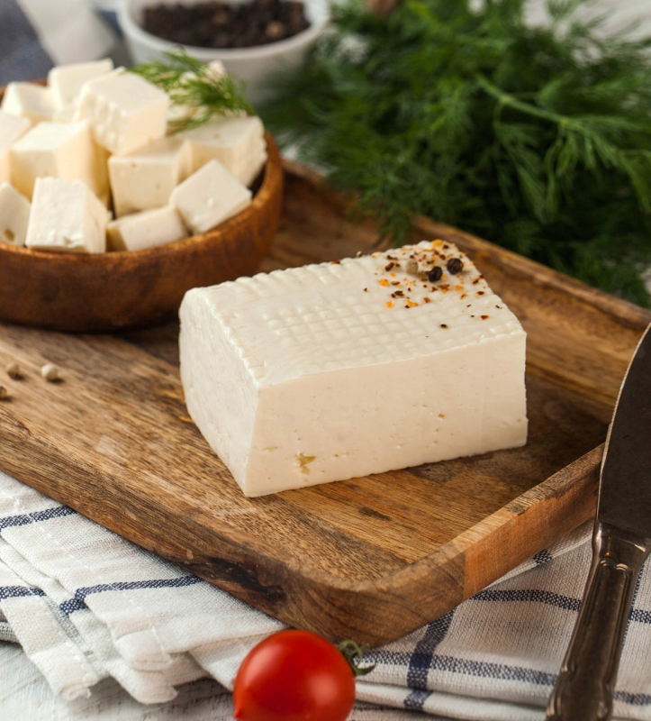
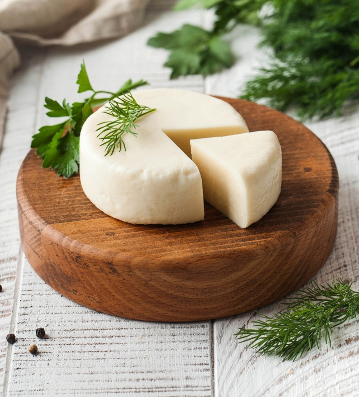
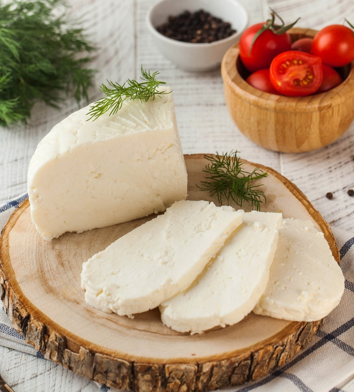
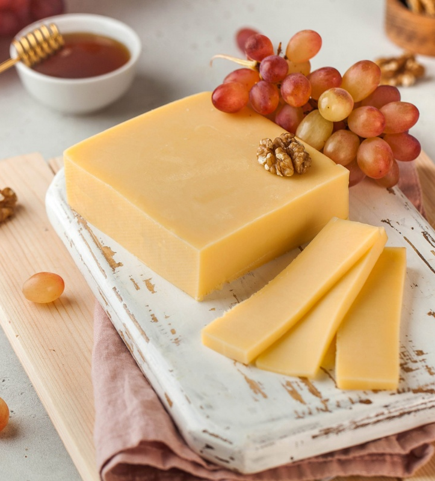
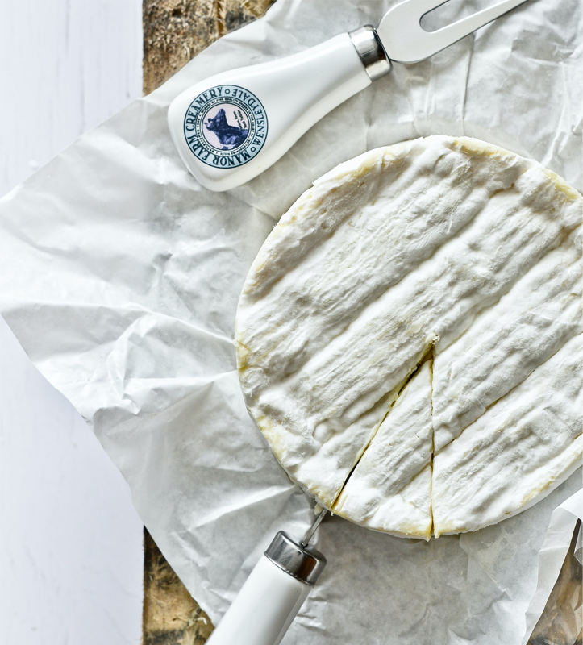

TOP  Бринза Сир виготовлений з козячого молока, має м'яку текстуру та солонаватий присмак 32 грн / 100 г Замовити
TOP  Сулугуні Розсільний сир з буйволиного молока, гладкою текстурою, білим кольором та виразним солонуватим смаком 48 грн / 100 г Замовити
 Селянський Сир з коров’ячого молока, який має м’яку текстуру, ніжний вершковий смак і аромат 24 грн / 100 г Замовити
 Голландський Твердий сир з гладкою текстурою, з ніжною молочною солодкістю та горіховим відтінком 43 грн / 100 г Замовити
 Камамбер Дозрілий сир з ніжною м'якою текстурою, білою пліснявою та характерним ароматом 187 грн / 100 г Замовити